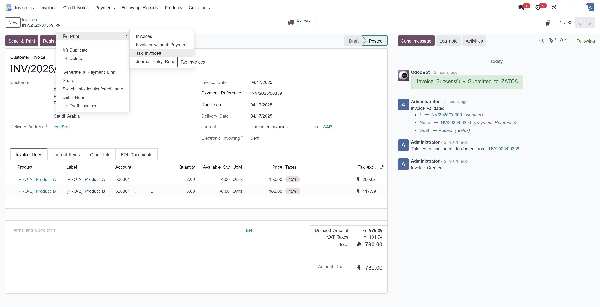
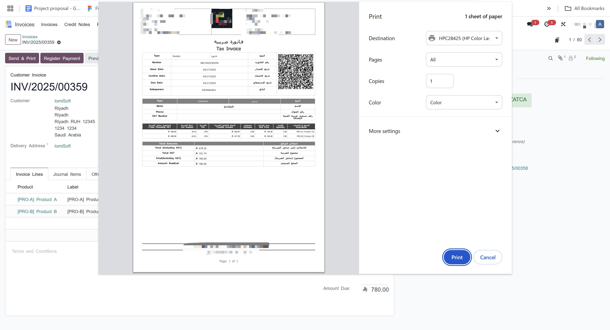

✅ Print Directly: the browser print dialog opens immediately.
✅ Open in a New Tab: the PDF is displayed in a new tab.
✅ Download: standard Odoo behaviour.
✅ Automatic fallback to the standard behaviour if the PDF cannot be generated.